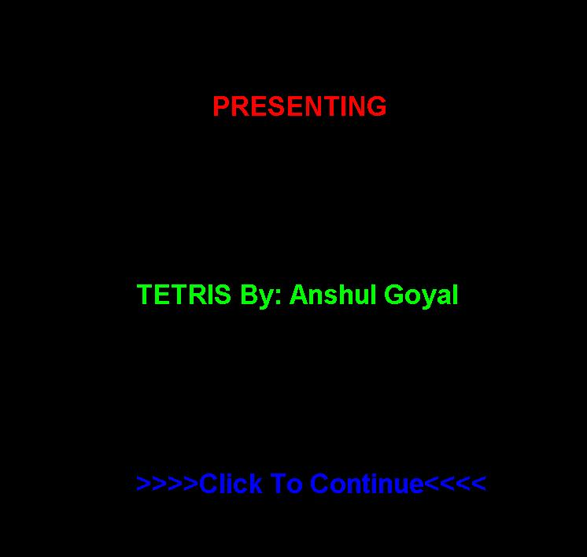

Tetris
Tetris
About the Game
This game represents the most famous game 'Tetris' invented by 'Alexey Pajitnov' in June 1984. The game is completely designed and implemented by me as a personal work in 2 weeks spending approximately 75 hours. The game incoporates most of the functionality that the original game had. However, for simulation purposes the gameplay and scoring has been kept very simple. The objective of the game is to arrange falling objects of different shapes in a series of rows without leaving any gaps in between, at the same time avoid reaching the object drop off point.
The game is built entirely in Microsoft VC++.NET and OpenGL using Win32 libraries.
Click here to download the game.
Note: The game requires Microsoft .NET runtime 2.0 or higher.
Achievement
I built this game as a stepping stone for myself to learn and to exhibit that I am comfortable in making games, and I did the job very well. I faced many challenges along the way related to game loop, graphic rendering, updating objects dynamically, maintaining object states etc. Each challenge taught me several new things and as a result the entire game development experience proved to be a great learning curve for me.